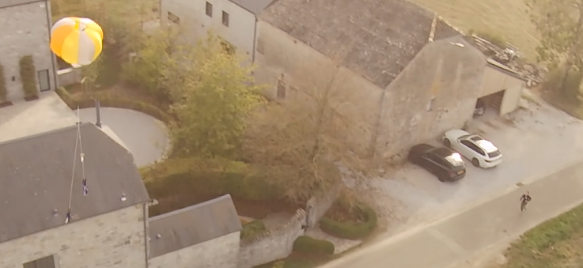

Aerospace portfolio Cedric Mekeirle
Antares first launch
Where I contributed
The flight computer software, including telemetry, onboard logging, and parachute pyro activation logic.
During the flight, I was mission control operator, monitored flight computer health and reported flight readiness as well as post and during flight stats.
Parachute design

Iteration after the flight
In the video, the parachute deploy event happens somewhat early; it should have occurred at apogee. I used the recorded data to investigate the behavior and found that the bug is probably related to the rotation sensor not being normalized correctly.
The interesting part was that the code always worked in our simulations. That pointed to a difference between the simulated environment and reality: the real sensor data may not have the same normalization guarantees as the simulated data. The next test is a drone flight this weekend, where I can reproduce the sensor motion and validate the hypothesis.
Personal projects
Learning the basics
I explored basic aerodynamics, recovery theory and motor design and started building my own full stack hobby rockets.
Soon I will attempt my first L1 launch, hopefully by the end of 2026.